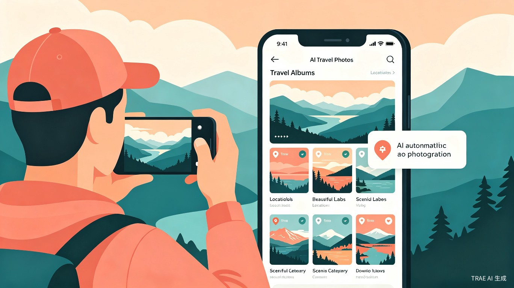
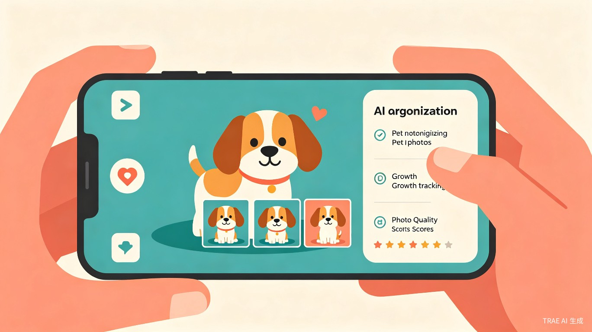
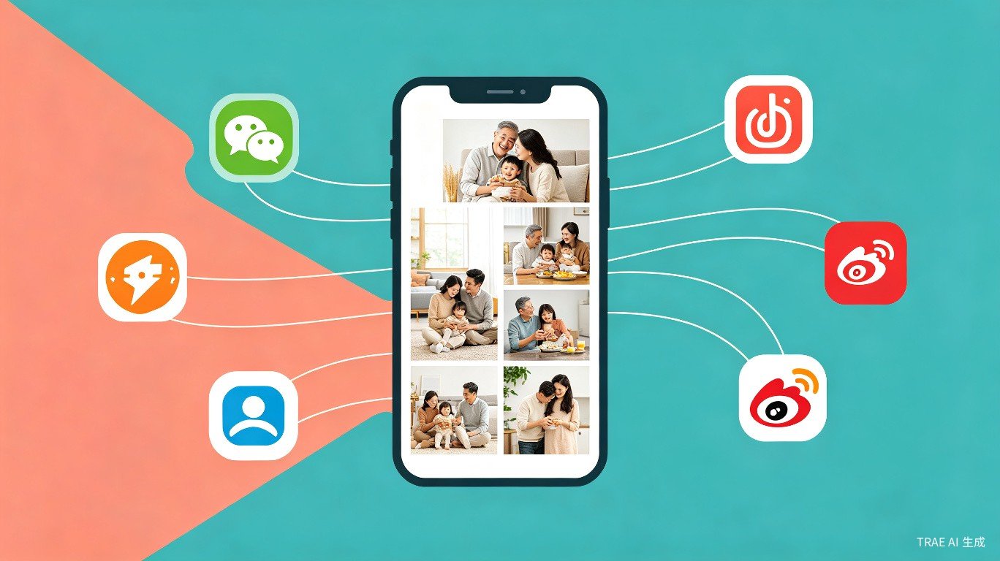

产品概述
AI 智能相机是一款 Android 平台的智能相册应用，面向两类核心用户：记录孩子成长的家庭用户，以及热衷记录生活的个人用户（旅行爱好者、宠物主人、美食博主等）。产品解决照片管理中的三大痛点：照片太多来不及整理、分散在不同设备中难以汇聚、想分享到社交平台但操作繁琐。
通过接入用户自选的大模型 API（如 DeepSeek），产品实现人脸识别、场景分类、质量评分等 AI 能力，自动将杂乱的照片整理成结构化的主题相册。家庭用户可创建共享空间与亲人共享，个人用户可快速生成精美相册集并一键发布到微信朋友圈、小红书等社交平台。
六大核心特色
智能拍摄与自动备份
拍照后自动上传至云端，支持后台静默备份，释放手机本地存储空间。
AI 智能筛选与分类
接入用户自选大模型，自动识别人物、场景，智能评分筛选最佳照片。
亲情共享
支持家庭成员账号绑定，创建家庭共享空间，爷爷奶奶也能轻松查看孙辈动态。
一键社交发布
精选照片一键分享到微信朋友圈、小红书等平台，告别繁琐的多步操作。
云端备份
自动备份到网盘，支持增量同步，本地照片可安全清理，随时云端查看。
管理后台
完整的 Web 管理系统，支持用户管理、内容审核、数据统计和系统配置。
目标用户画像
家庭用户
宝妈 / 宝爸（核心用户）
- 手机里存了上万张孩子照片，从未整理
- 想记录孩子成长，但没时间做相册
- 希望长辈能看到孩子的最新照片
- 偶尔想把好看的照片分享到朋友圈或小红书
- 手机存储经常告急，需要云端备份
祖辈 / 长辈（共享用户）
- 想随时看到孙辈的成长照片和视频
- 操作能力有限，需要极简的界面
- 主要使用微信，习惯在微信里查看内容
- 对隐私安全有顾虑，不希望照片被外人看到
- 不会主动拍照上传，主要是"观看者"角色
个人用户
旅行爱好者
- 每次旅行拍摄数百张照片，回来后从不整理
- 想按景点、日期自动生成旅行相册
- 希望快速选出最佳照片发朋友圈/小红书
- 需要云端备份防止照片丢失
- 愿意尝试新工具提升效率
宠物主人
- 手机里全是宠物的照片，占满存储空间
- 想按宠物成长阶段整理相册
- 经常把宠物照片发到社交平台
- 希望 AI 自动选出表情最萌的照片
- 对宠物相关的趣味功能有付费意愿
典型使用场景
场景一：宝宝成长记录
日常拍摄
宝妈用手机随手拍下宝宝吃饭、玩耍的瞬间
自动备份
照片自动上传至云端，本地可安全清理
AI 分类
AI 自动识别宝宝人脸，归入"宝宝成长"相册
家庭共享
爷爷奶奶打开 App 即可看到最新照片
场景二：朋友圈晒娃
AI 筛选
AI 从本周照片中自动选出质量最高的 9 张
一键分享
点击分享按钮，选择微信朋友圈
跳转确认
自动跳转微信，用户确认后发布
场景三：旅行相册自动生成

旅行拍摄
用户在旅途中拍摄风景、美食、人物照片
AI 识别
AI 自动识别景点地标、美食类型、人文场景
智能归档
按"城市-景点-日期"层级自动生成旅行相册
一键发布
精选照片一键生成旅行游记，分享到小红书
场景四：宠物成长记录

日常记录
用户随手拍下宠物的可爱瞬间
宠物识别
AI 识别宠物品种、面部特征，建立专属档案
成长追踪
按时间线展示宠物成长变化，标记重要时刻
萌照精选
AI 自动选出表情最萌的照片，一键分享到社交平台
AI 能力设计
与传统相册应用内置固定 AI 模型不同，本产品采用用户自选大模型的设计。用户在设置中填入自己拥有的大模型 API Key（如 DeepSeek、通义千问、文心一言等），应用调用该 API 完成图片理解任务。
AI 处理的核心任务
人脸识别与人物聚类
识别照片中的家庭成员，按人物自动归类。支持为每个家庭成员命名（如"爸爸""宝宝"），后续新照片自动归入对应人物相册。
场景分类
自动识别照片场景类型：室内/户外、美食、旅行、节日聚会、日常等，生成场景化相册。旅行场景下可进一步识别地标建筑和景点。
照片质量评分
从清晰度、构图、光线、表情等维度对照片评分，自动筛选出"最佳照片"，帮助用户快速找到值得分享的好图。宠物场景下额外评估"萌度"。
重复与冗余检测
识别连拍、截图、重复照片，标记建议删除项，帮助用户清理手机存储。
宠物识别与成长追踪
识别宠物品种、面部特征，建立宠物专属档案。按时间线追踪宠物外貌变化，自动生成"成长对比"相册。
旅行地点智能归档
结合 GPS 信息和 AI 地标识别，自动按"城市-景点-日期"层级归档旅行照片，生成带地图标记的旅行足迹相册。
为什么让用户自己选大模型？
国内大模型市场竞争激烈，DeepSeek、通义千问、文心一言、智谱等各有优势，价格也在快速下降。将模型选择权交给用户，一方面降低了产品的 AI 运营成本，另一方面让用户可以根据自己的需求和预算灵活切换。产品本身专注于做好照片管理和家庭共享体验，AI 能力作为可插拔模块存在。
社交发布方案

经过技术调研，目前各社交平台对第三方应用的自动发布限制如下：
| 平台 | 官方 API | 推荐方案 | 用户体验 |
|---|---|---|---|
| 微信朋友圈 | 部分支持 | 集成微信官方 SDK（WXSceneTimeline），调起微信客户端由用户确认发布 | 较好，原生体验 |
| 小红书 | 不支持 | 通过 Android 系统 Intent 分享图片到小红书，用户在小红书内完成发布 | 一般，需手动编辑 |
| 微博 | 支持 | 微博开放平台 SDK，授权后可直接发布图文 | 好，可真正一键发布 |
| 系统分享面板 | 通用 | Android ShareSheet，用户自行选择目标应用 | 好，覆盖面广 |
产品策略：优先集成微信 SDK 和系统分享面板作为核心分享通道，微博 SDK 作为补充。小红书暂通过系统 Intent 分享，待其开放 API 后再升级为深度集成。
竞品格局与差异化
| 维度 | Google Photos | 亲宝宝 | 百度网盘 | AI 智能相机 |
|---|---|---|---|---|
| 定位 | 通用云相册 + AI 编辑 | 育儿记录 + 母婴平台 | 综合网盘 + AI 相册 | 家庭智能相册 + 社交发布 |
| AI 模型 | Gemini（内置） | 自研育儿模型 | 百度文心（内置） | 用户自选（可插拔） |
| 家庭共享 | 基础共享 | 深度优化 | 家庭空间 | 核心功能 |
| 社交发布 | 不支持 | 不支持 | 不支持 | 核心功能 |
| 用户自选模型 | 不支持 | 不支持 | 不支持 | 核心功能 |
| 适老化设计 | 一般 | 较好 | 较弱 | 重点设计 |
| 数据隐私 | 跨境风险 | 国内合规 | 国内合规 | 国内合规 + 用户自控 |
核心差异化定位
AI 模型可插拔
用户自选大模型，不绑定任何一家 AI 厂商。随着模型降价和升级，用户始终能用到最好的 AI 能力，产品无需承担 AI 算力成本。
家庭共享 + 社交发布闭环
市面上的产品要么做家庭共享（亲宝宝），要么做 AI 相册（Google Photos），但没有一款将两者与社交发布打通。我们从"记录"到"分享"形成完整闭环。
多场景主题相册
不仅支持家庭相册，还覆盖旅行、宠物、美食等多种生活场景。AI 自动识别场景类型，生成对应的主题相册，满足不同用户的个性化需求。
数据自主可控
照片存储在用户指定的网盘（如百度网盘、阿里云盘），AI 处理使用用户自己的 API Key。用户对数据拥有完全控制权。
市场机会
中国家庭云相册市场正处于高速增长期。2024年市场规模约156.8亿元，同比增长22.5%。AI 功能渗透率预计从2025年的54.3%提升至2026年的68.9%。多代同堂用户占比提升至67%，78%用户因"记录家族历史"使用相关服务。
关键趋势对产品有利：
AI 成本快速下降
DeepSeek 等国产大模型价格持续走低，用户使用 AI 的门槛大幅降低，"用户自带 API Key"模式变得可行。
家庭共享需求爆发
67%的家庭为多代同堂，春节等节日场景使用频次提升300%。但现有产品在跨代共享体验上仍有明显不足。
隐私安全意识增强
83%用户关注数字遗产处置权，62%用户愿为精细权限管理付费。用户对数据自主可控的需求日益强烈。
社交分享成为刚需
65%的老年用户要求"一键分享至微信"功能。从记录到分享的完整链路，目前没有产品做得足够好。
产品路线图
MVP 阶段
- Android 端核心拍摄与备份
- AI 筛选与分类（单模型接入）
- 基础人物相册
- 微信 SDK 分享
- 家庭空间创建与邀请
成长阶段
- 多模型切换与 API Key 管理
- 场景化智能相册（家庭/旅行/宠物/美食）
- 照片质量评分与推荐
- 重复照片检测与清理
- 旅行地点智能归档
- 宠物识别与成长追踪
- 适老化模式（大字体/语音引导）
- Web 管理后台基础版
扩展阶段
- 一键发布到小红书/微博
- 宝宝成长时间线
- 旅行足迹地图与游记生成
- 宠物成长对比与趣味功能
- 云端备份多网盘支持
- 管理后台完善（数据统计/内容审核）
- 商业模式探索（订阅/增值服务）
技术可行性概要
| 模块 | 技术方案 | 可行性 |
|---|---|---|
| Android 客户端 | Kotlin + Jetpack Compose，Material Design 3 | 成熟方案 |
| AI 模型接入 | 用户配置 API Key，应用调用大模型 Vision API（图片理解） | DeepSeek/通义千问均支持 |
| 云端备份 | 对接百度网盘/阿里云盘 Open API，增量同步 | 需申请开放平台权限 |
| 微信分享 | 微信开放平台 WXOpenSDK，WXSceneTimeline | 成熟方案 |
| 小红书分享 | Android Intent.ACTION_SEND 系统分享 | 非官方方案，存在不确定性 |
| 家庭账号体系 | 自建账号系统 + 家庭空间邀请码机制 | 常规方案 |
| 管理后台 | Web 端，Vue/React + Node.js/Python 后端 | 成熟方案 |
关键风险与应对
AI 准确性风险
不同模型的人脸识别和场景分类效果差异大。应对：提供模型切换能力，对低置信度结果标记"待确认"，让用户参与校准。
第三方平台政策变化
微信/小红书可能调整 SDK 权限或分享策略。应对：系统分享面板作为兜底方案，不依赖单一平台。
用户配置 API Key 门槛
普通用户可能不理解什么是 API Key。应对：提供图文引导和预设模型推荐，降低配置难度；后续可探索平台代购模式。
隐私与合规
照片涉及家庭隐私，需遵守《个人信息保护法》等法规。应对：数据存储在用户自有网盘，AI 处理使用用户自有 Key，应用本身不持久化用户照片。